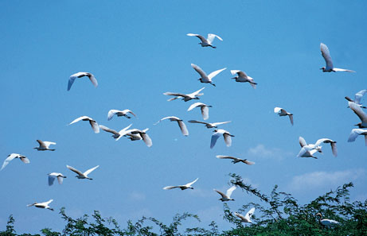

THE TREASURES OF KERALA

Tour Duration : 15 Nights / 16 Days
RATES : Rs 12500 per head
Destinations Covered: Delhi - Sariska - Jaipur -
Ranthambore - Bharatpur - Cochin - Alleppey -
Kumarakom - Wayanad - Mysore - Kabini - Bangalore
Package Highlights:
• Elephant ride in Jaipur
• Sanctuary visit at Sariska National Park
• Sanctuary visits at Ranthambore National Park
• Sanctuary visit at Bharatpur National Park
• Visit to Sultanpur Bird Sanctuary
• Stay at House boat on full board basis
• Stay at Vythiri resort on MAP Basis
• One night stay at Kabini resort on AP Basis
• Kath kali dance performance visit at Cochin
Package Inclusions:
• Accommodation in the mentioned category of hotels or similar for 15 hotel overnights on bed, breakfast basis
• All transfers, sightseeing, excursions as per the itinerary in exclusive chauffeur driven air conditioned Mini Coach
• Services of a qualified local English Speaking guide for sightseeing
• Elephant ride in Jaipur
• One sanctuary visit at Sariska National Park
• Two sanctuary visits at Ranthambore National Park
• One sanctuary visit at Bharatpur National Park
• Visit to Sultanpur Bird Sanctuary
• One night stay at House boat on full board basis
• One night stay at Vythiri resort on MAP Basis
• One night stay at Kabini resort on AP Basis
• Kath kali dance performance visit at Cochin
· All currently applicable government taxes
Package Exclusions:
• Lunch / Dinner
• Trekking / Extra excursion program / Light & sound program
• Expenses of personal nature such as tipping, porters, laundry, telephones, etc
CONDITIONS APPLY